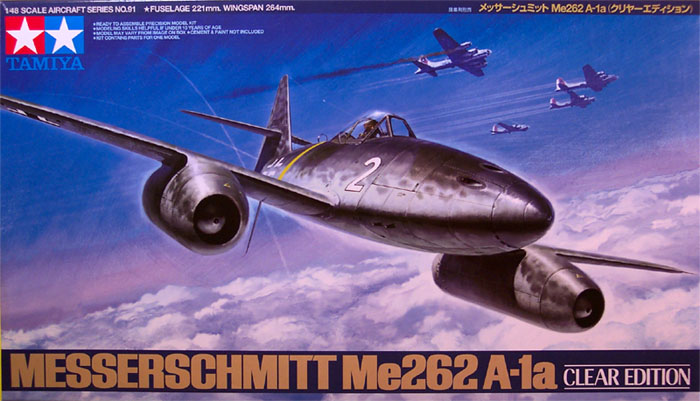
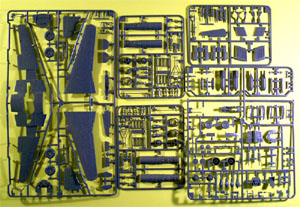
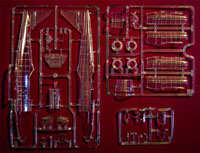
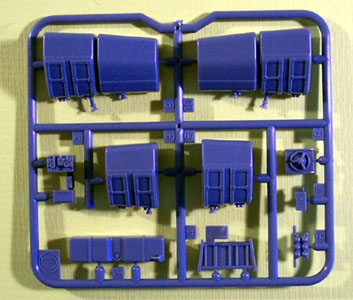
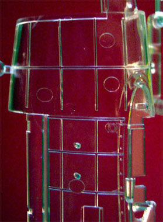
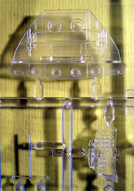
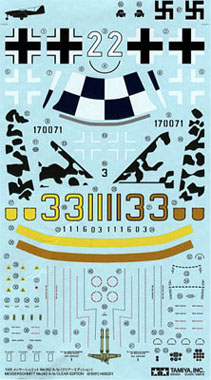
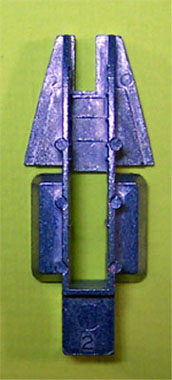
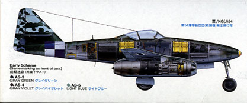

{kind=link}
{kind=link}

Tamiya 1/48 ME-262 Clear Edition
Kit #61091 MSRP $49.00 USD

Images and text Copyright © 2003 by Matt Swan
Developmental History
The Messerschmitt 262 has been heavily researched by many who are more knowledgeable than myself so I will not even beat that horse but will get right to the kit. You can click on the parts layouts for larger images.
The Kit

This is not a re-pop of the standard Tamiya 262 kit with clear plastic substituted for gray but rather a nearly new kit. I say “nearly” because several of the sprues are indeed the same but the fuselage and gun covers are new tooling that includes all the interior surface details. The sprues for the engines, and there are two of them, are new also and look like they will build up into some real nice representations of the real thing. This is important due to the fact that the kit includes not only the standard gray plastic engine housings (with inlets and outlets) but two sets of clear housings also. Another new sprue in the kit includes interior fuselage details like front and rear fuel tanks as well as the small fuel tank that mounts over the main wing spar.

There are several other small detail pieces to help fill out the rear fuselage. It would not be very difficult to do some super-detailing back there but even as an out-of-box build it will look pretty busy. Among the clear parts is a wonderful dashboard that is supplemented with some nicely done decals (several small panels) to overlay the raised details. Some judicious application of setting solution will be necessary here.
The forward fuel tank looks like it will provide an excellent place to hide some nose weight but that may not be entirely necessary as Tamiya has included a large white metal floor pan for the gun compartment and nose wheel that may do just fine for keeping this baby on the runway.

All together we have 170 injection molded pieces in light gray plastic featuring engraved panel lines, three trees comprising 26 pieces of injection molded clear parts that are not only clear but show no bubbles (this is what killed the Monogram Clear B-17G) and one well detailed white metal front nose gear/gun bay floor to act as a nose weight. That is 196 parts making this a full box of modeling fun.
Having all these parts is just great but packaging is very important, especially with a kit like this with so many clear parts. Consider all those clear parts and a heavy piece of metal in the same box – trouble looking for a place to happen. Each tree of clear parts is individually bagged, as are most of the gray parts. The trees with the engine pieces are bagged together. The nose weight is held in a cardboard former, individually bagged and securely stapled to the side of the box. Tamiya scores a lot of points with me for their packaging efforts, particularly since I just got the Monogram Prowler a few weeks ago and had to deal with crappy packaging that resulted in damage to clear parts.
The fun doesn’t stop here though. The decals included with the kit are a little out of the ordinary also. There are markings for three different aircraft with stencils galore. The registry of the decals looks right on the money, color density looks good and they are not overly thick – a problem in the past with Tamiya. In addition to all this there are camouflage decals for the tail stab. There are right and left decals to take care of the molted markings for one aircraft scheme. They sure look interesting but I wonder how well they will blend with a scheme that would be mostly airbrushed? One other item is injector pin markings on those clear parts. There are many of them on the main fuselage. They are not bad as far as chunks of plastic sticking out that have to be trimmed off but there is a mark - lots of them. The modeler will need to do some serious polishing to take care of these and Future will be needed.
   

There is a fair amount of literature included in the box also. There is the standard two-page “history of the jet” leaflet that seems to be in every Tamiya kit and a 1:1 markings and decals placement sheet that will be very helpful for camouflage patterns. The instructions are very in depth. The booklet is 16 pages including a brief history of the 262, a quick summary of the three marking schemes provided, a very extensive color code chart and some very detailed construction steps. There are plenty of color call-outs throughout the booklet and they get very detailed. For instance, the engine assembly calls for eight different colors or shades of paint getting as particular as Titanium Gold and Gold Leaf on the same assembly. The variations of color combined with the detail level on the parts should result in an interesting model when complete. The booklet features five pages of marking and stencil placement directions and an entire page of load-out suggestions. The kit includes 250kg bombs, W.Gr21 rockets, R4M 55mm air-to-air rockets and RATOG assemblies. The model can be built with engines installed in clear nacelles or with the more conventional engine pods and have the engines displayed separately on service carts which are also included in the kit. Oddly enough, with all these extras there are no external fuel tanks. You do get a choice of rudders though, fabric or sheeted.
Conclusions
If you are a fan or collector of Messerschmitt 262’s then you must have this one in your collection. The only thing that is missing from this kit is photo-etched parts. With the inclusion of a few aftermarket goodies to dress up the engines a little further, add a few PE details to the cockpit and some cables and wiring in the fuselage and gun bay this kit would be perfect. As is, out-of-box it is still an exceptional model kit and I highly recommend it for building and collecting.